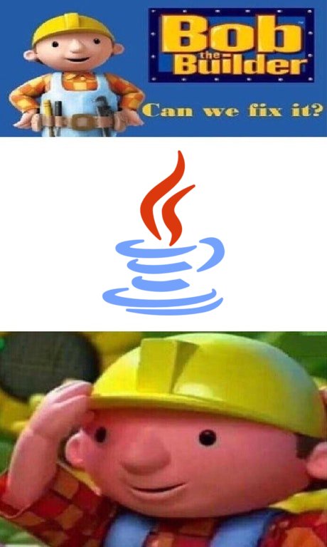

class: center, middle # Functional as a First Paradigm #### `Becoming Immutable in a Mutable World` <div style="font-size: .75em">github: @cam-carter<br> twitter: @camn_carter </div> --- class: middle ## Hi, my name is Cam __Here's a little bit about me:__ - I'm not from here. - I graduated from university in __New Orleans__ with a degree in __Computer Science__ - This happened in May, and I moved to __Cincinnati__ two weeks later. - I work at Gaslight, writing __Elixir__. (sadly some JavaScript, too) - I also play music, have a __cat__, and ride a motorcycle. ??? I'm not from here. I'm from Louisiana, so Ohio has been a bit of a change of pace. Sometimes I feel like I'm catching up, but then everybody starts slowing down. And then I slow down, but you guys all speed up. And the cycle continues yada yada --- class: middle, center <img src="assets/images/ohio.jpg" alt="Ohiooooo" width="500"> ??? And here's a picture of Ohio for those of you who aren't from here --- class: middle ### Assumptions and questions 1. Your first language is important. 💻 2. Imperative and OOP dominate your early life as a programmer. 👶🏻 2. Functional programming could prove to be a better option. 💡 4. How can we change this? Can we even do that? ❓ 5. Should we event do that? 🤔 ??? Why should this matter to a new developer? And I'm asking this as a new developer. I've been doing this stuff for 8 months now, and all of those 8 months have been spent working on an Elixir application. And before this I was immersed in computer science academia which is a heck of a lot different than software development. --- class: middle ### You first language is important! (Right?) __Right!__ - It sets the standard for learning future languages - The first language you learn impacts how you approach programming - You livelihood is on the line! What's gonna land you the best job? .center[] ??? So is your first language important? I think so. It sets the standard for learning future languages! Does this new language that your learning get you excited about programming? Do you want to learn more? Your first language can be very impactful to answering these questions. Most likely you're learning to program in order to get a job as a developer. I could be wrong their, but whether it be unversity or a tech bootcamp, what you're learning is important for your career. But, it's not necessarily the language that is important. You can learn C, Java, Python, Haskell, etc. What really matters most is the paradigm! --- class: center, middle ## What the heck is a programming paradigm? ??? Well that just raises the question: what the heck is a paradigm? --- class: middle ### First the word __paradigm__: > A philosphical and theoretical framework of a scientific school or discipline within which theories, laws, and generalizations and the experiments performed in support of them are formulated. <br> > — _The Mirriam-Webstar Dictionary_ __Or to keep it simple...__<br> A paradigm is just a pattern of different stuff about a thing A __programming paradigm__ is a way to classify a language based on its pattern and features. ??? A paradigm is a philosophical and theoretical framework of scientific school or discipline within which theories, laws, and generalizations and the experiments performed in support of them are formulated. To keep things simple: a paradigm is just a pattern of different stuff about a thing --- class: middle ### The big two __Imperative__ and __Declarative__ Imperative includes: - procedural - _groups instructions into um... procedures?_ - object-oriented - _instructions are oriented into objects_ Declarative includes: - functional - _the only one I truly understand_ <span style="color: #8e8e8e"># what we're gonna talk about</span> - logical - _largely based on formal logic (e.g., Prolog)_ - mathematical - _exactly how it sounds?_ ??? I like to think of programming paradigms separated into two big categories that have these sub-categories: imperative and declarative. Most of you folks probaby probably learned an imperative language first and use it on a day-to-day basis. This includes: C++, Java, python, all that good stuff. But! You probably also use a declarative language everyday, too. And I'm talking about SQL. Whether your're an object-oriented developer or a functional one, in the end, we all have to use SQL. That's beside the point. I'm here to talk about my experience as a new developer only really understanding functional programming, and also why I think it could be a good choice for other newbies out there like myself. But first, what even is functional programming? --- class: middle ### Societal standards... We all learn an imperative and OO language first (well usually) __But why is OOP so popular?__<br> Well according to Joe Armstrong: 1. It was thought to be easier to learn 2. It was thought to make code reuser easier 3. It was hyped 4. It created a new software industry These are all valid points... ??? These are all valid points, but the same can be argued for functional programming nowadays. Well at least in my opinion, but I won't divulge too much. --- class: middle ### So, what even is functional programming? > In computer science, functional programming is a __programming paradigm__—a style of building the structure and elements of computer programs—that treats computation as the evaluation of __mathematical functions__ and avoids __changing-state__ and __mutable__ data. <br> > — _Wikipedia_ ??? In computer science, functional programming is a __programming paradigm__-a style of building the structure and elements of computer programs-that treats computation as the evaluation of mathematical functions and avoids changing-state and mutable data. The key difference functional languages have is that they are algorithm focused rather than data focused. Hence the term _functional_ programming. Programs are usually structured into functions that have smaller functions inside of them that sometimes even spit out other functions! They are designed to strictly avoid changing-state and mutable data. It's excited really, I swear --- class: center, middle ### It's exciting really, I swear <img src="assets/images/no-exit-condition.jpg" alt"No exit condition!" width="600"> ??? You might be wondering... why is this important for a new developer? Why might a language that avoids state, side-effects, and mutable assignments benifit someone new to programming? And before I move on to the next slide, let me add that my first language was not functional. It was actually Visual Basic way back when, and way back when is really not that long ago, seeing as I'm only 22. --- class: middle ### It's all about the good stuff! __Benefits of functional first:__ - (Depending on the language) It's more human readable! - There's more focus on algorithmic composition - You don't have to worry about pesky side effects in your program - Programs are smaller and more modular - Applications have better scalability - Concurrency! ??? Here's my shortlist of benefits for why a modern functional language could be a good choice as a first language to learn. Let me emphasize the word _mordern_ here. And let me also emphasize when I say modern, I'm mostly referring to Elixir. The first time I learned a functional language was in university when we were taught Scheme. And let me tell you. That was the worst. Looking back, after messing around with Lisp. I'm sure I just hyperbolized my situation into a bad experience, but boy oh boy, did that dissuade me from picking up functional programming again. I thought it was all like Scheme: hard to read, hard to understand, and don't even get me started about the parantheses. After this trauma, I picked up python. --- class: middle ### Take a gander ```lisp (defun fibonacci (n &optional (a 0) (b 1) (acc ())) (if (zerop n) (nreverse acc) (fibonacci (- 1 n) b (+ a b) (cons a acc)))) (fibonacci 5) ; ==> (0 1 1 2 3) ``` ??? We all know what recursion is, and I learned that by writing Fibonacci's sequence and Towers of Hanoi over and over and over and over --- class: middle, center <img src="assets/images/wut.jpg" alt="Wut" width="400"> ??? But after looking at that for the first time, I suddenly lost all urge to dive further into functional programming. Why do we do this to ourselves? Or really the future generation of programmers? I'm not saying lisp is bad, but I believe that there's definetly a more approachable language to be teaching the functional paradigm. --- class: middle ### Why do we do this? For many years MIT taught Lisp as their introductory programming language. Most notably with the book, _Structure and Interpretation of Computer Programs_. __Here's probably why:__ - You're introduced to a lot of core concepts that other languages most likely use - There's hardly any syntax to learn, so you focus more on these core concepts - There's a LOT of resources already available ??? So for many years MIT taught Lisp as their introductory programming language. Most notably with the book _Structure and Interpretation of Computer Programs_. (which doesn't even introduce local assignment until 300 pages in btw) My guess is this was the standard because it introduces you to a lot of core concepts that become trivial to learn with other languages; there's not a whole lotta syntax to learn, so you can focus on these core concepts; and, there's already a lot of existing resources. --- class: middle, center ### Is there a different way? <img src="assets/images/lisp-is-different.jpg" alt="Lisp is different?" width="600"> ??? So, how do we get to that first benefits that I saw in functional programming? How do we not turn away new programmers by introducing them to scary things like Lisp and Scheme? That's where I think Elixir comes in. Now I don't want you all to think that this talk is secretly Elixir propaganda, but if you are enticed to learn it, I will also take credit for that. --- class: middle ### Fibonacci's Sequence in Elixir ```elixir def fibonacci(0), do: 0 def fibonacci(1), do: 1 def fibonacci(n), do: fibonacci(n - 1) + fibonacci(n - 2) Enum.map(1..5, & fibonacci(&1)) # ==> [0, 1, 1, 2, 3] ``` ??? This block of code accomplishes the same goals as the lisp example. But it's way easier to understand! Even if you don't know a darn thing about functional programming, it at least doesn't give you a headache. --- class: middle ### Getting more with less __What concepts did we just introduce?__ - Pattern matching - variable assignent - Polymorphism - And even the `Enum` module from Elixir's standard library! ??? That's a lot of bang for out buck. Obviously, if I were creating a curriculum to teaching introductory programming with Elixir, I wouldn't throw all that stuff at you on day one. But entertain me for a moment! I like to think of functional languages as a series of learning plataeus, especially Elixir. A series of topics that you're gonna spend some amount of time on each of them. The first of which is thinking functionally, then pattern matching, etc. Climbing up the stairs, but occasionally coming back down because you missed something or there's something more to learn. --- class: middle, center <img src="assets/images/international-waters.jpg" alt="Stateless Mike" width="500"> ??? When I found Elixir, it was like a dream come true! I had a language that gave me so much and asked for so little. And I never had to write a loop or conditional block again. Before I was writing with a functional language as a web developer, I was modeling low-level computations with Python (and not very good Python at that). So any shift away from that could be seen as positive. --- class: middle ### So what? ### Why is this idea of being introduced to more concepts quickly a good one? ??? Think of it as this: You're given a big box of tools (not power tools obviously), and you may not know how to use most of those tools. But at least you have them. And when you go to build you're first house, you might do everything with a hammer. But if you anthing like me, you're sure as hell gonna build that house. This is the philosphy I've gathered over my past 8 or so months with Elixir. I had all the tools there. I had documentation ready to go in my browser, but when I found a cool new tool in the box, that was the only one I used for about two weeks, and then I moved on to the next. --- class: middle, center  ??? This is just some bias to go with my metaphor. --- class: middle ### What else is good? __Well let's talk about algorithmic complexity__ Since we don't have to keep up with the state of our program, we can put more focus into the structure of our functions and modules. Idempotence --- scalability and modularity --- concurrency --- ### But how can we change this? Teaching more accessible languages Giving new programmers choice --- ### Can we even do this? Probably not - OO dominates the industry, meaning most jobs are OO - Do people even care enough? People get comfortable, so why change things? ??? Honestly I've become comfortable, and I see myself writing Elixir for a the forseeable future --- ### There's still hope! Functional languages are growing in popularity. I mean otherwise I wouldn't be here right now, right? Large tech companies and high traffic startups are starting to shift more of their services to Elixir and Erlang - Netflix - Whatsapp - Discord - AirBnb --- ### Closing remarks ---